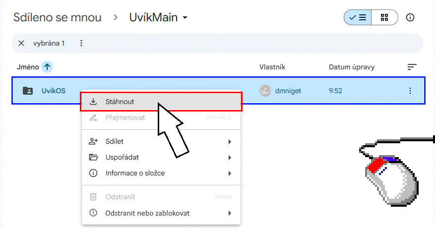
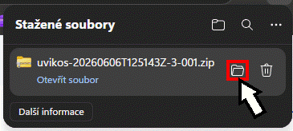
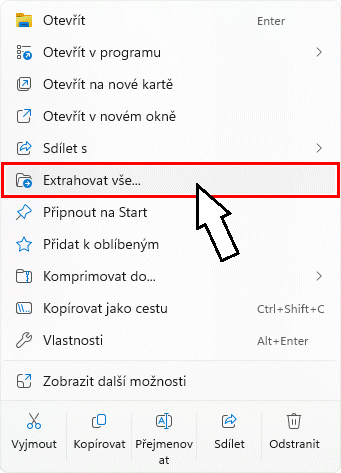
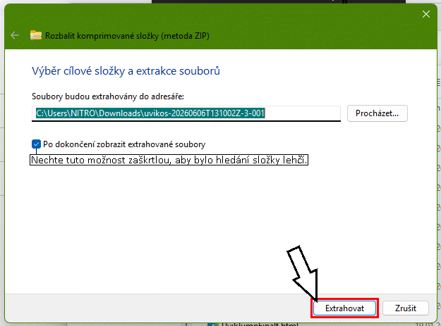
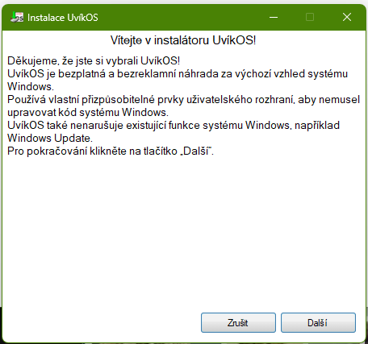

Jak stáhnout UvíkOS
Nejprve otevřete odkaz pro stažení UvíkOS: UvíkOS - Disk Google. A klikněte na uvikos a poté na Stáhnout.

Pokud se tato možnost nezobrazuje, zvolte možnost Stáhnout vše na pravé straně. Poté vyčkejte, než se stáhne archiv ZIP (například „uvikos-20260606T125143Z-3-001.zip“). Po dokončení stahování soubor najděte v Průzkumníku souborů. To můžete jednoduše udělat kliknutím na ikonu složky vedle staženého souboru.

Stažený archiv ZIP extrahujte. To můžete udělat tím, že kliknete na soubor pravým tlačítkem myši, vyberete možnost Extrahovat vše a poté kliknete na Extrahovat.


Poté najděte rozbalenou složku (jmenuje se stejně jako stažený archiv ZIP) a spusťte soubor „Nainstalovat UvíkOS“. Protože UvíkOS nemá placený certifikát, může se zobrazit varování SmartScreen. Stačí kliknout na Další informace a poté na Přesto spustit.
